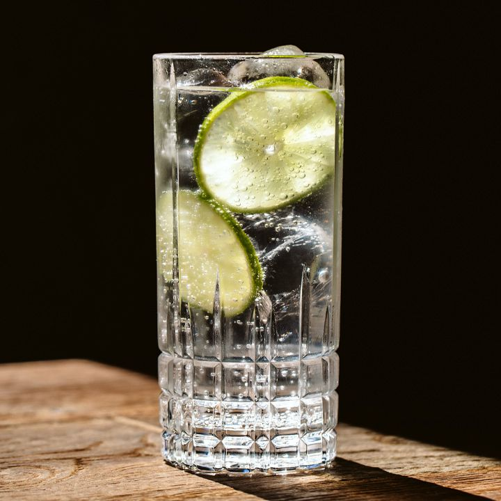

Gin & Tonic

Description
A herbal and floral drink that has been popular since the victorian era
- Gin
- Tonic Water
- Ice Cubes
- Add ice to tall glass
- Pour 30ml of Gin into the glass
- Pour in Tonic and stir gently
- Throw in a slice of lime if you'd like and enjoy!